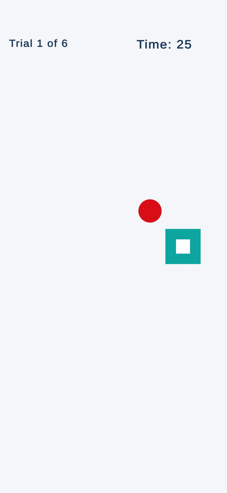
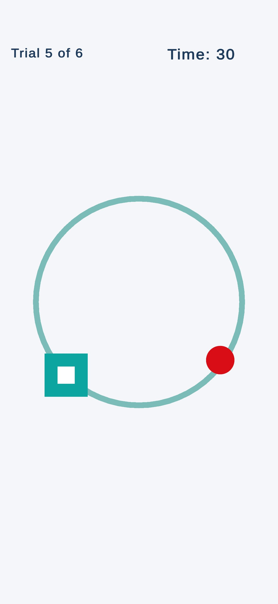
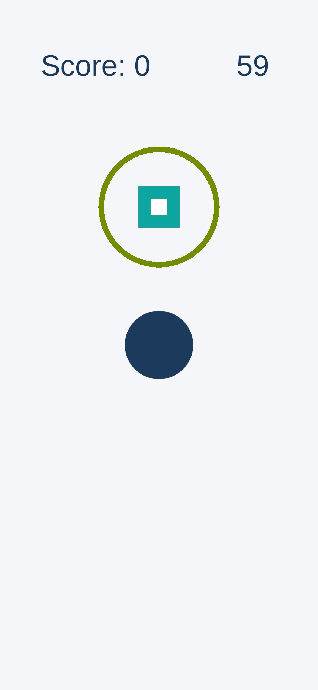

Measure what you couldn't measure before.
Tilt-based wrist performance across six movement planes. Built by a Certified Hand Therapist for the clinicians and patients who need it.
Goniometer apps measure joint angles. Exercise apps track adherence. Research robots measure proprioceptive thresholds in a lab. WristSkill™ measures how well the wrist moves across six movement planes — on a device you already own.
Three screens from a WristSkill session.
A patient selects a mode, moves through six 30-second trials guided by tilt, and returns session-over-session to track change.



An iPhone becomes a wrist performance measurement tool.
The patient holds the phone, tilts it to guide a ball toward targets on screen, and WristSkill records how they moved — across six movement planes, three performance metrics per plane. Baselines and session history are stored on the device, with optional progress sharing when the user chooses it.
Performance, quantified.
The three metrics reflect the dynamic kinesthetic and visuomotor components of wrist performance — not static joint position sense. They are measured against each patient's own prior sessions; WristSkill does not yet have published normative values.
More is better.
The number of targets reached during each 30-second trial. Typical ranges fall between 5 and 15 per trial, depending on ability and condition.
Higher is better.
How quickly the ball reached each target relative to the theoretical minimum time — expressed as a percentage. Higher scores reflect faster, more coordinated motor responses.
100% is perfect.
How directly the wrist guided the ball to the target, as a percentage. Lower values indicate overshoot, wandering, or correction.
Assessment across the full functional envelope.
The six-plane structure is intentional. It covers cardinal, diagonal, and rotational movement. Because the phone is held in the hand, forearm rotation contributes to every plane alongside wrist flexion-extension and radial-ulnar deviation — these are functional combinations, not isolated cardinal motions.
Diagonal 1 and Diagonal 2 correspond to the PNF D1 and D2 wrist endpoints. The specific wrist motion for each diagonal differs between right and left hand. The D2 diagonal includes the wrist endpoint of the Dart Thrower's Motion — a functionally important plane in hand therapy.
- Horizontal
- Vertical
- Diagonal 1 · PNF D1
- Diagonal 2 · PNF D2
- Circle clockwise
- Circle counter-clockwise
Free Play for ongoing training.
Alongside the six-plane Performance Mode, WristSkill includes a Free Play mode — shrinking-ring trials in each of the six planes, plus a Random mode that mixes directions. Clinicians use Free Play for training between assessments; patients use it for daily home practice.

Symmetry visible at a glance.
Every session records which hand was tested. Baselines, rolling session history, and progress views are kept independent for each side, so asymmetries become obvious during follow-up.
Progress stays private unless it is shared.
WristSkill stores session results, baselines, and session history in local storage on the device. The app does not use accounts, cloud sync, or advertising. It uses Firebase (Google) to collect anonymous usage analytics — no names, emails, or health information — to help identify crashes and improve the app. Progress sharing happens only when the user actively chooses to share it through another app or service.
WristSkill is available on the App Store.
Built for hand therapists, occupational therapists, and the patients they work with.
Interested in research collaboration? See the About page.